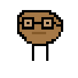
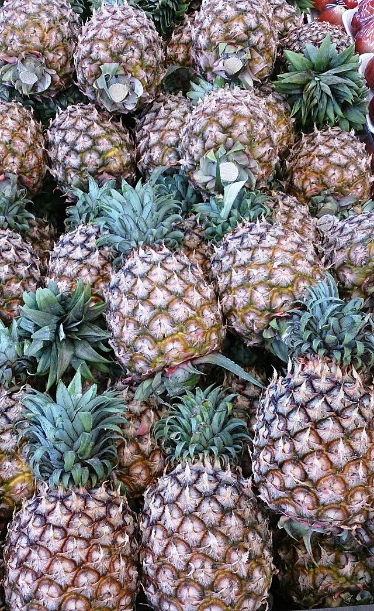

Potato Philosophy

Potato in Deep Thought.
Potato.png is a potato. Potato.png is a png. Potato.png is a potato png. Potato.png is a potato in deep thought.
Sometimes, Potato.png sees an offensive .png. He then says to himself: I may be a clump of pixels somewhat formed in the crude shape of a potato, but in my heart I am a real potato.
When faced with problems or a mean .jpg file, he knows that he must follow his heart.
Potato.png often contemplates the meaning of existence, pondering questions like: What does it mean to be a potato in a digital world? Can a .png file have feelings? But he knows he just has to be himself.
In the end, Potato.png is not just a file; he is a philosophy.
Once, he found himself confronted with a .json file that could be used to duplicate himself. He pondered the implications: Would a copy of him still be "him"? Or would it be a mere imitation? But he knew because it said on the little popup that shows when you try to click on something, but there is an error and it doesn't want you to open it: "This file is corrupted and cannot be used."
WARNING: EVERYTHING BELOW IS EXTREMELY DEEP AND CAN BE HAZARDOUS TO ATTEMPT TO COMPREHEND
Proceed with caution...
Is a potato really a potato? Can just a collection of starch (or pixels) really be such a profound being?
Is a potato really alive? Can a .png file really be alive? What does it even mean to be alive?
What is life?
Hold on...
The dictionary definition of life is "the condition that distinguishes animals and plants from inorganic matter, including the capacity for growth, reproduction, functional activity, and continual change preceding death."
hmmmmmmmm

Is a potato really a potato if it is not in the shape of a potato? Can a .png file really be considered a potato if it is not in the shape of a potato?
Is a potato really a potato if it is not in the color of a potato? Can a .png file really be considered a potato if it is not in the color of a potato?
Is a potato really a potato if it is not in the texture of a potato? Can a .png file really be considered a potato if it is not in the texture of a potato?
Is a potato really a potato if it is not in the taste of a potato? Can a .png file really be considered a potato if it is not in the taste of a potato?
Is a potato really a potato if it is not in the smell of a potato? Can a .png file really be considered a potato if it is not in the smell of a potato?
Is a potato really a potato if it is not in the sound of a potato? Can a .png file really be considered a potato if it is not in the sound of a potato?
Is a potato really a potato if it is not in the thought of a potato? Can a .png file really be considered a potato if it is not in the thought of a potato?
Is a potato really a potato if it is not in the essence of a potato? Can a .png file really be considered a potato if it is not in the essence of a potato?
Is a potato really a potato if it is not in the √ç∂ƒ¥˙ of a potato? Can a .png file really be considered a potato if it is not in the √ç∂ƒ¥˙ of a potato?
I cant think of any more of these sorry
Notice how similar the structure of a potato is to that of a human brain.
hmmmmmmmm
In the end, Potato.png is not just a file; he is a philosophy.
He is a way of life.
He is a state of mind.
He is a way of being.
He is a way of existing.
He is a way of understanding the world.
He is a way of understanding oneself.
He is a way of understanding others.
He is a way of understanding everything.
He is a way of understanding understanding.
He is...
a potato.
Darn! All this philosophy has made me depressed.
Suddenly, pineapples!

This does not help.
If you don't get the reference, shame on you, you uncultured swine.